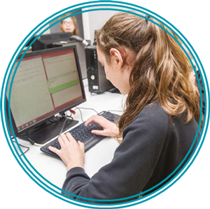

BBC Bitesize revision materials on evaluation solutions
BBC Bitesize Programming resources
Race To Learn provides a real life context of a racing team and provides actual live data to develop, interpret and use when developing a solution
The Harwell Dekatron computer was used as a giant calculator. This unit of work provides tools for exploring computer coding through the Dekatron exemplar
Khan Academy resources focusing on the use of Algorithms
Many schools are teaching Python as a first programming language, the LGfL Python Tutor provides resources, learning and practical development in a familiar, reactive environment
code.org provides a series of materials and teaching contexts to support a wide range of programming languages.
While recognising that HTML is not a language suitable for solving computational problems it can be an excellent way to introduce coding fundamentals and syntax.See the LGfL HTML Tutor or the Code Academy HTML simulation.
The LGfL Python Tutor provides students with opportunities to find alternative solutions to the same problem and reflect on the efficiency of developed algorithms.
This collection of unplugged activities can also be used to support students in developing and refining algorithms
Computer Science Unplugged provides a range of non-screen based resources for teaching and learning of computing contexts
BBC Bitesize resources on search algorithms
Resources can be found to support Sorting in the BBC Bitesize Computing area
Computer Science Unplugged provides a range of non-screen based resources for teaching and learning of computing contexts including algorithms
Algorithms
Understand several key algorithms that reflect computational thinking [for example, algorithms for sorting and searching]; use logical reasoning to compare the utility of alternative algorithms for the same problem

An algorithm is a precise method for solving a given problem (for example, a recipe for baking a loaf of bread or instructions for constructing a flat-pack desk). Some algorithms are written to be run on a computer, and some are meant to be carried out by a person. A common misconception is that algorithms, programs and code are all the same thing. This isn't the case. Programs contain algorithms. Programs are written in programming languages. Code is a generic term for any set of statements written in a programming language, whether or not they constitute a program. An algorithm can also take the form of steps written in structured English (pseudocode) or it can be expressed as a flowchart.

Algorithms help shape the world around us. We have algorithms to find the best route from A to B, algorithms that rank pages from a web search, algorithms that establish our credit rating, and so on. Algorithms are everywhere!
Often, there are several possible algorithms to solve the same problem, which differ in complexity, efficiency or generality. These may just be different ways of arriving at the same result (for example, different procedures for adding together threedigit numbers). Where the problem is more complex, different algorithms may lead to different solutions (for example, different routes from A to B).
It is important that pupils understand there may be more than one way to solve a problem, and that some problems have more than one 'right' solution. This can be challenging, but it is an essential lesson in life. Pupils should be prepared to evaluate an algorithm using factors such as correctness (in the sense that it solves the problem) and speed, but also the quality of the solutions that it yields.
For example, to find the way out of a maze, one (simple but slow) algorithm might be to walk around at random until you find the exit. Another (more complicated) algorithm would involve remembering where you had been in order to avoid going down the same path twice. Another might be to keep your left hand on the wall and walk until you find the exit. Each algorithm gives a different solution to the same problem (a different route out of the maze). Other qualities might be taken into consideration: maybe one solution gets your feet wet and another gets them muddy.
The programme of study requires that pupils understand several key algorithms, giving searching and sorting as examples. These examples are important because the tasks (searching and sorting) are easy to understand, but there is a particularly rich variety of algorithms for solving them, vividly illustrating the kind of trade-offs discussed above. Pupils can play the part of a machine executing searching and sorting algorithms, and they can translate algorithms into program code.

Searching
Linear and binary searches are the main searches pupils should learn.
A linear search starts at the beginning of a list and goes through every item until it finds the one you are looking for (or you come to the end of the list without finding the item). A real-life example of this might be looking for a picture of your cousin's wedding in a pile of unordered printed photographs. You keep flicking through until you find the photograph, or until you've looked at all the photographs and conclude that the picture isn't there.
A binary search is much quicker, but only works if you have a list of items that have already been sorted in order. You start with the middle item. If you find it first time, well done! Otherwise, the item you are looking for will either be in the top or bottom half of the list. Go to the middle of that half and eliminate the other half of the list. Continue chopping the list in half until you have found the item – or worked out that the item you're looking for is not in the list.
You may find it useful to look at CS Unplugged, which provides lots of non-computer-based searching activities.
Sorting
There are dozens of competing algorithms for sorting data. It is important that pupils know that there are lots of ways of achieving the same result, and that some methods are more efficient than others.
Giving pupils physical sorting tasks, and asking them to record the algorithms they use, can be a useful way of introducing the subject. There are some helpful examples at CS Unplugged, which provides lots of noncomputer-based sorting activities. There are also sorting dance videos available, for example, see this example on You Tube.